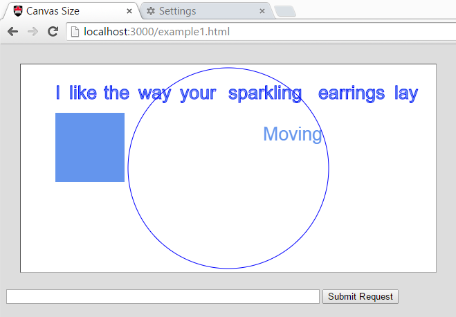

COMP 2406 - Winter 2019 Tutorial 02
Client-Server JSON Data
© L.D. Nel 2019
Revisions will be noted here
Description:
This tutorial introduces you to the basic architecture of a typical single-page web application. The main pieces are: a static server to server the intial webpage, both server-side and client-side javascript, and the exchange to JSON data strings between client and server. The demo code will be used as a basis for several tutorials and the first two assignments.
Here we want to get you working with passing JSON formatted data between client and server, looking at static server code, and client-side javascript code.
In this demonstration the client will request some data from the server and update part of the web page being displayed based on the data. What is important to notice is that the client is NOT asking for an entire new web page, just some data to put into the existing one. This is often referred to as a "single page app". The client request for data is known as an AJAX request (Asynchronous Javascript and XML) although these days JSON strings are used more often in place of XML data, nevertheless people still call it AJAX.
In the demo code the client is going to make an AJAX request as the result of the user clicking a submit button and then use the data returned from the server to update the web page's contents.
Important: tutorials are meant to be started as homework. You will not generally be able to finish a tutorial if you only start it at the tutorial session.
Tutorial Grading |
|
|---|---|
| Mark/2 | There are no tutorial makeups. The mark you get at your tutorial session is final. |
0/2 |
No show, no progress, or being unable to answers basic questions about your own code. |
1/2 |
Partial progress (e.g. half the problems completed.) |
2/2 |
Completing all or most of the required problems |
Demo Code
Open the demo_code folder and run the server found there. It has an accompanying html folder from which it will serve the client-side application files.
The server-side javascript is in file: server.js and the client-side javascript is in file canvasWithTimer.js. Make sure you study the code until you know how the client-side javascript ends up with the client (you should be able to see it delivered using the network tab of the development tools in Chrome.)
When the browser requests http://localhost:3000/example1.html you should see a browser application that looks like the following.

Notice the following. You can drag the words around with your mouse but you need to grab the word near the start of the word -if you grab long words near the middle it does not work. This is awkward and you will fix it in problem 2.
You can move the blue box around with the arrow keys and whenever you release the arrow key a POST message is sent to the server containing the location of the blue box.
Also if you type a name of a song like "Sister Golden Hair" in the text field and then press the ENTER key, or press the "Submit Request" button, the request goes to the server (look at the server's console output) but it simply echos back a JSON object string containing the text "NOT FOUND : Sister Golden Hair" and the client code then uses that string as the word moving around the screen.
Study the client side javascript function handleSubmitButton() it looks something like the following:
function handleSubmitButton() {
let userText = $('#userTextField').val(); //get text from user text input field
if (userText && userText != '') {
//user text was not empty
let userRequestObj = {
text: userText
} //make object to send to server
let userRequestJSON = JSON.stringify(userRequestObj) //make JSON string
$('#userTextField').val('') //clear the user text field
//Prepare a POST message for the server and a call back function
//to catch the server repsonse.
//alert ("You typed: " + userText)
$.post("userText", userRequestJSON, function(data, status) {
console.log("data: " + data)
console.log("typeof: " + typeof data)
let responseObj = JSON.parse(data)
movingString.word = responseObj.text
//replace word array with new words if there are any
if (responseObj.wordArray) words = responseObj.wordArray
})
}
}
Notice the following. The user text is taken from the text field and placed in a javascript object {text: userText}. This object is then turned into a JSON data string using JSON.stringify(). Then a HTTP POST message is sent to the server containing the request url and post message data. A callback function parameter is provided and called when the server's response comes back.
The post message is being sent using the jQuery post() method. jQuery is a helper javascript library -can you figure out how it is being included in our code? jQuery accesses its methods through the "$" variable refering to a global object (e.g. $.post(...)). (You can learn more about jQuery if you visit the W3 schools site https://www.w3schools.com/jquery/default.asp but you won't need to modify any of this for the tutorial.)
In this code the callback function is expecting the data to arrive as plain text to be interpreted as a JSON data string which can be turned back into a javascript object using JSON.parse(). At that point the javascript object can be accessed for data provided by the server. Read the section in the course notes on JSON Basics.
If you are ever in doubt about what is being returned from the server you can print the item to the browser's console with console.log(...) and view the output with the browser's developer tools. This will be an important debugging technique throughout the course.
Notice none of this involves loading a new web page. It is just a request for some JSON data from the server.
Problem 1
Look at the code that implements the server. Notice at the top it defines three word arrays to represent the first line of lyrics from three songs: "Peaceful Easy Feeling", "Sister Golden Hair", and "Brown Eyed Girl".
For problem 1 we want you to modify the server so that if the user types ones of these song titles in the text box and presses "Submit Request" the server will return a JSON object containing the word array for that song. The client should then use this word array and the words of the song should appear on the canvas. The user should then be able to drag these new words around. Also the word moving around the screen should change to "FOUND".
If the user submits a request for a song "XXXX" that the server does not have the moving words should still change to "NOT FOUND: XXXX" as in the demo code.
You will need to study and then modify where the POST request is currently handled in the server. You should not have to change anything in the client-side javascript for this problem.
Again, a useful debugging strategy is for server-side javascript to print to the server's console and for client-side javascript to print to the browser's console which is visible when you display its developer tools.
Problem 2
As mentioned, one annoying thing with the client code is that you have to grab the word with the mouse near the start of the word. The client code is not aware of the width of the word you are trying to grab. On the other hand, the moving word bounces off the walls of the canvas so the timer code moving the word around is clearly aware of the width of that word.
For this problem modify the getWordAtLocation() function in the client-side javascript so it too is aware of the width of the word you are trying to drag. Study how the width of the moving word is measured (see the canvas drawing function and the timer handler function).
After making these modifications you should be able to drag words around by clicking the mouse anywhere along the word -much better.
Problem 3
For this problem we want you to modify the code so that everytime you submit a request for a song the title in the user text field gets added as a paragraph to the bottom of the web page:
To accomplish this do the following:
1) In the example1.html file add the following <div id="text-area"></div> after the markup that defines the "Submit Button".
<input type = "text" id="userTextField" name = "userTextField" value="" size = "60" />
<input type="button" value="Submit Request" onClick="handleSubmitButton()">
<div id="text-area"></div>
The id="text-area" attribute of the <div> tag can be used to target it with javascript as we will do next. Look up on W3Schools what an html <div> tag is supposed to represent.
2) Add the following code (shown in bold) to the handleSubmitButton function in canvasWithTimer.js to add the html paragraph item each time the submit button is pressed. This illustrates one way that javascript can access and modify the html elements of a web page.
function handleSubmitButton () {
var userText = $('#userTextField').val(); //get text from user text input field
if(userText && userText != ''){
let textDiv = document.getElementById("text-area")
textDiv.innerHTML = textDiv.innerHTML + `<p> ${userText}</p>`
var userRequestObj = {text: userText};
//...
}
When you have completed these three problems demonstrate your work to the tutorial TA to get credit for the tutorial.
1) You might notice in the server code that the JSON object is being returned to the client has MIME type text/plain and not application/json as you might expect. In fact if you change it to application/json the app probably will not work. Can you explain why the browser is expecting the response as text? Google jQuery post() and you will probably find the answer.